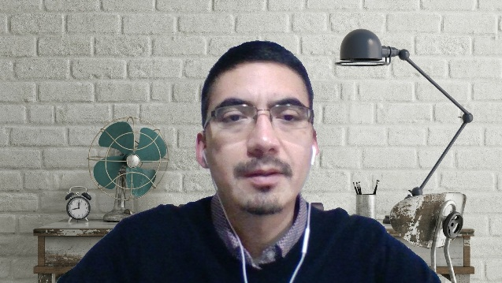

Curriculum Vitae

Mi nombre es Gabriel Céspedes, nací en Iquique, Chile, el año 1985. Soy de profesión Profesor de Física y Matemática, con Magíster en Matemáticas.
Mi hobby es aprender de distintos temas y fomentar el apoyo en compartir y adquirir conocimiento. Hace unos años he estado incursionando cada vez más en temas del ámbito de la programación, buscando como meta poder enfocar distintas herramientas tecnológicas en el ámbito de la educación.
Antecedentes Personales
| Nombre |
Gabriel Antonio Céspedes Alarcón |
| Correo |
gabriel.cespedes@usach.cl |
| Teléfono |
+56 9 76474838 |
| Domicilio particular |
Pje. Antártica 257, Santa Fe, Curicó |
| Fecha y lugar de nacimiento |
11 de diciembre de 1985, Iquique, Chile |
| Estado civil |
Casado |
| Cédula de identidad |
16057526-3 |
Antecedentes Académicos
- Estudiante de la Carrera Full Stack JS, Academia Latam, julio 2022.
- Diplomado en Python Profesional, Escuela de Ingeniería, Pontificia Universidad Católica de Chile, julio 2020 - marzo 2021.
- Magíster en Ciencia en la Especialidad de Matemática, Universidad de Santiago de Chile. Egresado con
distinción máxima, 2017. Tesis: “La Ecuación de Schrödinger con Derivada Temporal de Orden Fraccionario”.
- Licenciado en Educación en Física y Matemática, Universidad de Santiago de Chile. Título profesional de
Profesor de Estado de Física y Matemática, 2009 - 2013. Tesis: “Diseño y evaluación de un módulo de estudio
online que desarrolla la habilidad de argumentación científica en profesores y estudiantes de física y
matemática”.
- Obtención del reconocimiento Alumno con mejor rendimiento académico de la Facultad de Ciencia, Universidad de
Santiago de Chile, promoción 2013.
- Obtención del reconocimiento Alumno con mejor rendimiento académico de la carrera de Licenciatura en Educación
en Física y Matemática, Universidad de Santiago de Chile, año 2011.
- Estudios de Ingeniería Civil, PUC, años 2004 - 2007.
Habilidades
Django, Geogebra, Latex, Matlab, MySql, Python.
Antecedentes Laborales
- Profesor de Matemáticas, Álgebra, Matemática Aplicada, Cálculo, Modelamiento Matemático,
Estadística Descriptiva, Estadística Inferencial, Optimización y Modelamiento.
Instituto Profesional Duoc. Sede Antonio Varas, Santiago.
Desde I semestre de 2017 a la fecha.
- Tutor Analista del Programa Ejecutivo Vespertino (Carreras Semipresenciales) de Duoc, Sede Antonio Varas.
Revisión y análisis de los distintas asignaturas y secciones en la plataforma educativa de la institución
(Blackboard Collaborate)
Desde septiembre de 2020 hasta la fecha.
- Diseñador de Talleres grupales para desarrollar la habilidad Resolución de Problemas.
Asignatura Cálculo I: DUOC UC.
Desde II semestre de 2020 hasta la fecha.
- Analista de evaluaciones del Programa de Matemáticas, Instituto Profesional Duoc. Casa Central.
Revisión y diseño de evaluaciones para el Programa de Matemáticas de Duoc.
Desde mayo de 2019 hasta enero de 2020.
- Profesor de Estructuras Algebraicas (Álgebra Abstracta) y Tópicos de la Matemática Contemporánea
(Matemáticas Discretas) para la carrera de Pedagogía en Matemáticas, Universidad San Sebastián.
Campus Bellavista.
- Asesor Pedagógico Área Matemática para el Programa de Acompañamiento y Acceso Efectivo a la Educación Superior,
PACE, del Ministerio de Educación, Instituto Profesional Duoc.
Acompañamiento y asesoría a profesores de matemática de educación media de distintos establecimientos educacionales de
la Región Metropolitana.
Desde II semestre de 2017 hasta agosto de 2018.
- Profesor de Cálculo II para carrera de Ingeniería en Electricidad y Electrónica Industrial, Instituto
Profesional Santo Tomás. Sede San Joaquín.
- Ayudante de Cálculo III para la carrera de Ingeniería en Matemática. Universidad de Santiago de Chile.
Portafolio
Linkedin
Youtube